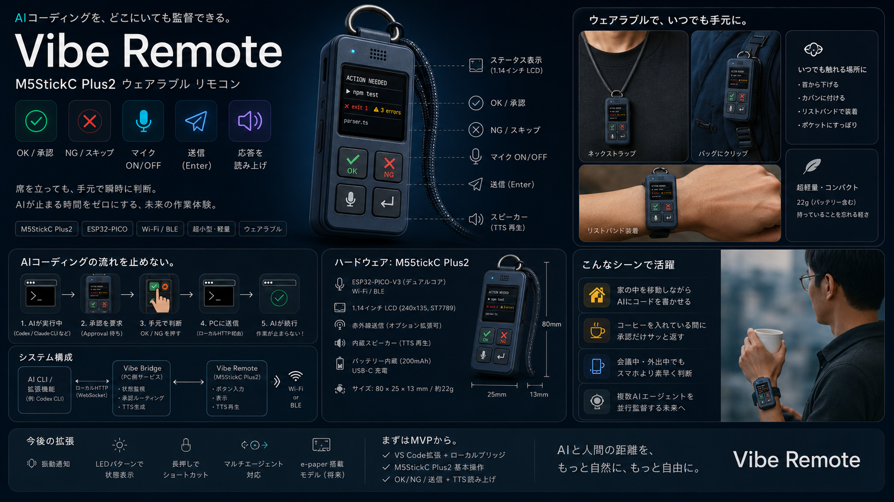

PCの前に座らなくても、Vibeを止めない。キーホルダーサイズのVibeリモコン。

AI エージェントは作業の途中で頻繁に 「OK / NG」 を求めてくる。 そのたびに PC の前に戻ってマウス・キーボードを触るのは煩わしい。
でも本質的にユーザーがやることは 承認・却下・少しの指示出し だけ。 これは 物理ボタン数個で足りる。
ソファや少し離れた席から、TWS で通知音を聞き、手元の小さなデバイスで OK / NG を返す。
必要なら マイクをON にして口頭で追加指示、Enter で送信。 AI の応答は 読み上げ (TTS) で耳から把握する。
ボタン入力・LED表示・Wi-Fi常時接続。チャタリング除去と自動再接続を担当。
ローカルにWSサーバを立て、受けたコマンドを executeCommand で実行。状態を定期pushしてLEDを制御。
既存のまま。音声はOS既定マイク=TWSを使うので追加実装不要。
すべて VS Code の正式なコマンドID（proposed API 不要）。拡張から vscode.commands.executeCommand() で呼ぶだけ。
| 操作 | コマンドID | 信頼性 |
|---|---|---|
| OK（ツール実行を承認） | workbench.action.chat.acceptTool | ◎ |
| NG（スキップ） | workbench.action.chat.skipTool | ◎ |
| 編集を全受け入れ | chatEditing.acceptAllFiles | ◎ |
| 送信 (Enter) | workbench.action.chat.submit | ◎ |
| マイク ON | workbench.action.chat.startVoiceChat | ◎ |
| マイク OFF | workbench.action.chat.stopListening | ◎ |
| マイク OFF + 送信 | workbench.action.chat.stopListeningAndSubmit | ◎ |
| 応答を読み上げ (TTS) | workbench.action.chat.readChatResponseAloud | ○ |
| 読み上げ停止 | workbench.action.speech.stopReadAloud | ◎ |
workbench.action.chat.startVoiceChat は
VS Code Speech 拡張（ms-vscode.vscode-speech）が必要。
マイクはOSの既定入力デバイスを使うため、TWSを既定マイクに設定すればそのまま音声が通る。
readChatResponseAloud は応答全体を読み上げる。v1はこれで割り切る。
「AIがOK/NGを欲しがっている」瞬間は、VS Code が標準で鳴らす
chatUserActionRequired の通知音で把握。TWSで聞けば十分。
→ 拡張側で正確に検知する公式APIは現状存在しないため、ここは音に委ねるのが最も堅牢。
拡張が約1秒ごとに「観測可能な状態」を集約し、LEDへ反映。 正確な"待ち"ではなく活動ヒューリスティックによる"ざっくり表示"。
→ ファイル編集やターミナル出力が止まったら「待ちかも(黄点滅)」。
表示の主役は「承認内容」ではなく "作業の実況"。 特にターミナルのシェル統合APIで、AIが実行したコマンドと成功/失敗がリアルに取れるのが最大の収穫。
| 表示できる情報 | API | 表示例 |
|---|---|---|
| 実行中ターミナルコマンド | window.onDidStartTerminalShellExecution | ▶ npm test |
| コマンド終了＋結果（終了コード） | window.onDidEndTerminalShellExecution | ✓ exit 0 / ✗ exit 1 |
| エラー / 警告の数 | languages.getDiagnostics() | ⚠ 3 errors |
| 編集中のファイル名 | window.activeTextEditor | parser.ts |
| タスク（ビルド/テスト）実行中 | tasks.onDidStartTask / onDidEndTask | ▶ build |
| デバッグ実行中 | debug.onDidStartDebugSession | 🐞 debugging |
| ウィンドウのフォーカス | window.state.focused | 在席 / 離席 |
| Gitブランチ / 変更ファイル数 | Git拡張API | main · 5 changed |
| マイク状態 / WS接続 | 拡張が内部で保持 | マイクLED / 切断 |
| AIが作業中か | 編集/出力の有無 |
| 待ちかも | 活動停止 N秒（完了と区別不可） |
| 承認内容の文面 | "OK to apply patch?" 等 |
| 承認待ちの正確な判定 | → 通知音に委ねる |
| AI応答テキスト取得 | 読み上げ以外で不可 |
┌──────────────────┐ │ ⚠ ACTION NEEDED │ ← 通知音と連動(推定) │ ▶ npm test │ ← 実コマンド(確実) │ ✗ exit 1 ⚠ 3err │ ← 結果+エラー数(確実) │ 📄 parser.ts │ ← 編集中ファイル(確実) └──────────────────┘ [✓OK] [✗NG] [🎤] [⏎]
青 常灯 — 作業中（編集・出力あり）
黄 点滅 — 待ちかも（活動停止 N秒）
赤 点滅 — WS切断 / 再接続中
緑 — マイクON / TTS中
{ "type":"action", "value":"ok", "token":"…" }
{ "type":"action", "value":"ng", "token":"…" }
{ "type":"action", "value":"submit", "token":"…" }
{ "type":"action", "value":"micToggle", "token":"…" }
{ "type":"action", "value":"readAloud", "token":"…" }
{ "type":"action", "value":"stopRead", "token":"…" }
{ "type":"ping" }
{
"type":"state",
"chat":"working|maybeWaiting|idle",
"mic":"on|off",
"tts":"on|off",
"ts": 1234567890
}
{ "type":"ack", "ok":true }
変化時に push（即応）＋ 5秒ごとのハートビートで接続維持。全 action に共有トークンを必須化。
拡張起動時に生成しデバイスへ設定。全操作メッセージに添付、不一致は拒否。ハードコード禁止。
LANのみ。可能なら接続元IPを限定。0.0.0.0 の無防備な公開は避ける。
WSサーバは「Copilot操作を実行できる」高権限。同一NWの他端末からの不正承認を必ず防ぐ。
ESP32 + ボタン・カラー液晶・バッテリ・ケースが最初から一体。 約 48×25×14mm、ストラップ穴あり＝キーホルダー化が容易。
約 21×17.5mm の超小型。タクトスイッチ数個＋LEDを足して 自分で「キーホルダー筐体」に収める前提。
arduinoWebSockets で対応| ボタン | 短押し | 長押し |
|---|---|---|
| 緑 | OK（承認） | 編集を全受け入れ |
| 赤 | NG（スキップ） | 読み上げ停止 |
| 青 | 送信 (Enter) | 応答を読み上げ |
| 紫 | マイク ON/OFF | （予備） |
acceptTool/skipTool/submit)。
まずブラウザのテストボタンで疎通確認。working/maybeWaiting/idle を配信。